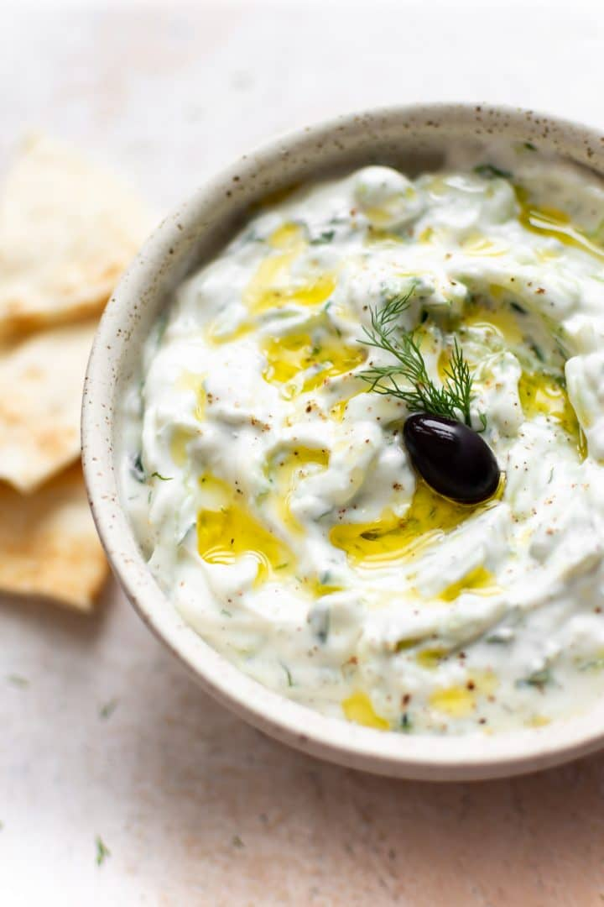

Tzatziki

Packed with probiotics, this dip is
refreshing and wholesome.
Ingredients
- 900ml plain low-fat yogurt
- ½ English cucumber, grated
- 1 clove garlic, pressed
- 2 tablespoons lemon juice
- 2 tablespoons olive oil
- 2 teaspoons grated lemon zest
- 3 tablespoons chopped dill
- 1 tablespoon salt
- 1 tablespoon black pepper
The Process
- Stir together yogurt, cucumber,
garlic
lemon juice, and olive oil
in a bowl.
- Add lemon zest, dill, salt, and
pepper; whisk until smooth.
- Pour into a serving dish,
cover tightly, and refrigerate
8 hours before serving.